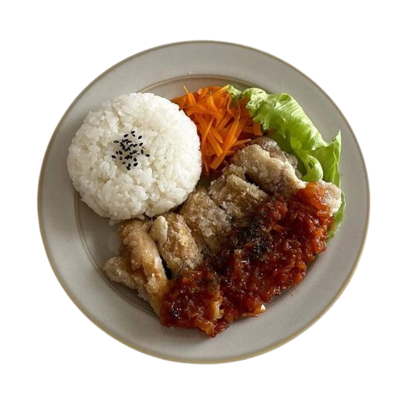
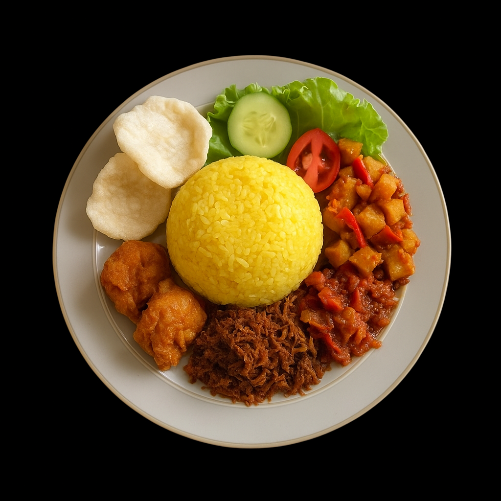
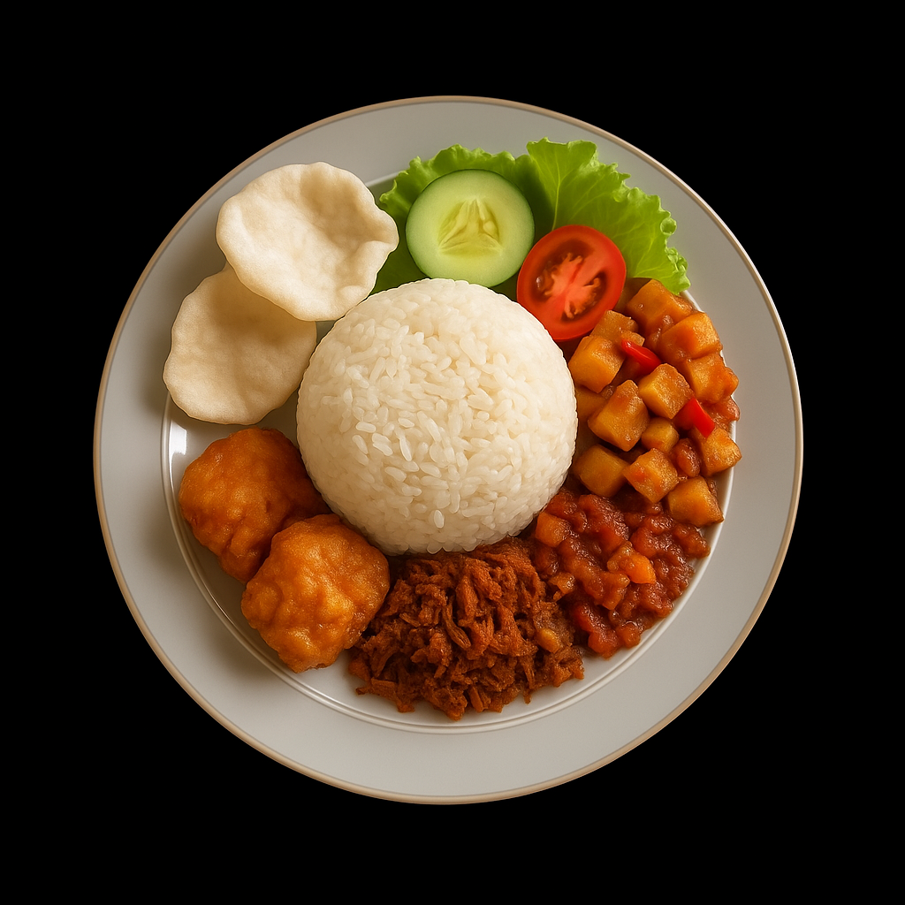
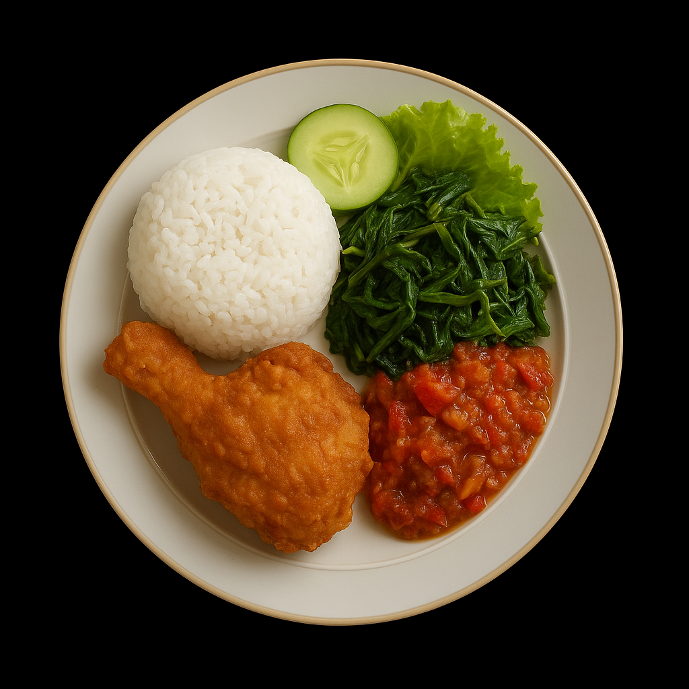
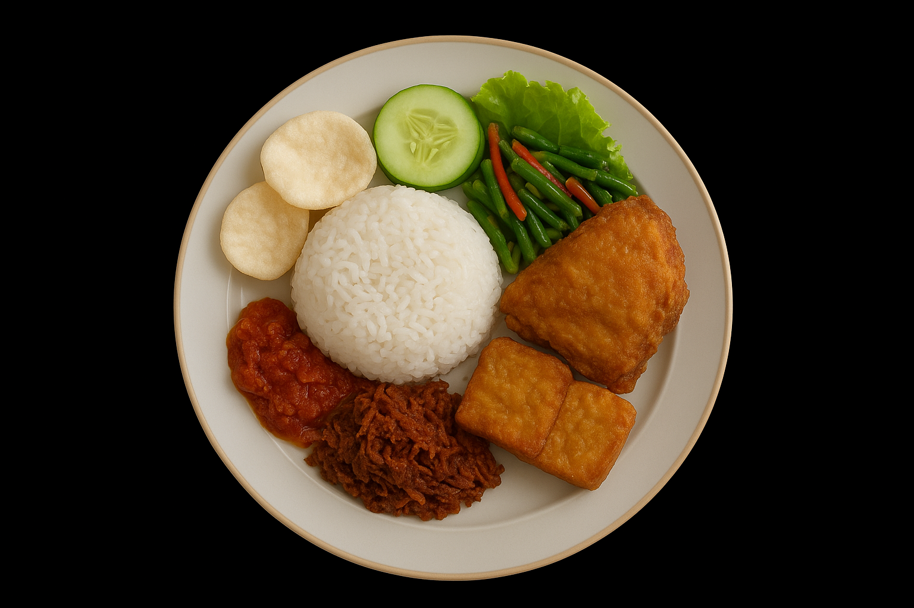
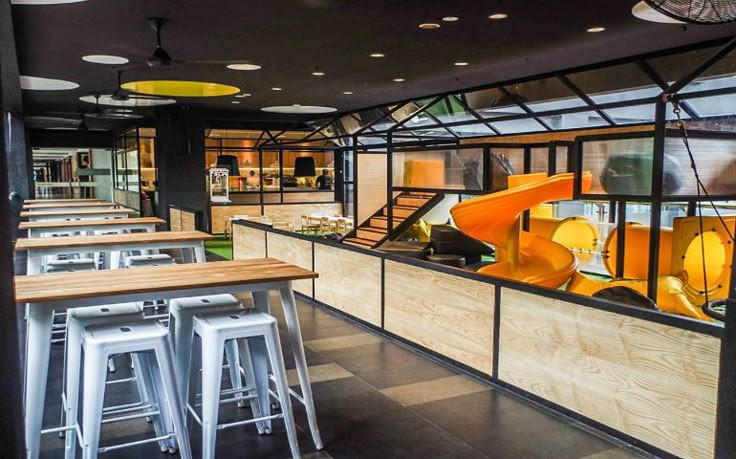

"Sustainability is not a trend; it is the only way forward." At Makanism ID, our journey to finding the best organic local ingredients is a testament to our commitment to the earth and the communities that cultivate it.
We source our produce directly from independent farmers who practice regenerative agriculture. By shortening the supply chain, we ensure that every vegetable, herb, and spice arrives in our kitchen at peak freshness, bursting with natural flavor.
The Local Advantage
Using local ingredients doesn't just reduce our carbon footprint—it elevates the dining experience. When an ingredient is allowed to ripen fully on the vine rather than in a shipping container, the difference on the palate is undeniable.


Organic produce sourced daily.
Zero Waste Philosophy
We embrace a zero-waste philosophy in our kitchen. Vegetable peels are transformed into rich broths, and excess herbs are dehydrated into striking garnish powders. Respect for the ingredient means utilizing it in its entirety.
"When we respect the land, it rewards us with flavors that cannot be replicated by artificial means."
Join us in celebrating the harvest. Every dish at Makanism ID tells the story of the soil, the sun, and the hands that nurtured it.



